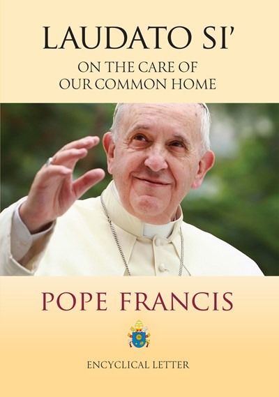

Pope Francis
Opening
Pope Francis, also known as Pope Francis I, is the 266th pope, which is the bishop of Rome and the leader of the Roman Catholic Church. He was elected Pope on the 13th of March 2013 after the previous Pope, Pope Benedict XVI, retired, the first one to do so in six hundred years. Pope Francis has made significant changes when it comes to the usually extremely conservative policies of the Catholic church, for example appointing women to roles in the Vatican, and allowing priests to bestow blessings in situations where they were previously forbidden.
What are Pope Francis' Beliefs?
Pope Francis is an extremely devout Catholic, as is shown by his actions as head of the Catholic Church. He believes strongly in equality among all people and is the driving force behind the currently changing church policy. He once said in a press conference regarding homosexuality "If a person is gay and seeks God and has good will, who am I to judge?". He has also appointed women to Vatican roles such as the Dicastery for Bishops, which decides on the appointment of bishops. This is a huge change, as it gives women power in the church.
Early life
Pope Francis was born on the 17th of December 1936 in Buenos Aires under the name Jorge Mario Bergoglio. His parents were Italian immigrants to Argentina, and he had six siblings. In high school, he studied to become a chemical technician, but after briefly working in the food processing industry, he felt called to the church. He joined the Jesuit Order in 1958 after a severe bout of pneumonia when he was twenty-one which led to the removal of part of his right lung. He then turned to Academics within the Order, obtaining the equivalent of a master’s degree in philosophy. Following his graduation, he taught literature and psychology at a high school, while at the same time pursuing a degree in psychology. He was ordained a priest in 1969 and took his final vows in 1973. He then served as the superior, or head, of the Jesuit Order in Argentina from 1973 until 1979. This coincided with a military coup in Argentina, (1976). In the following “dirty war,” where thousands of people were made to disappear (kidnapped, tortured and often killed), Bergoglio claimed to have hidden several people from the authorities. Following the dirty war, he continued his studies of theology, and was appointed as the auxiliary bishop of Buenos Aires in 1992 and was later appointed as the Archbishop of Buenos Aires in 1998, a position he held until he was elected as the Pope in 2013. When there was an economic crisis in Argentina in the late 1900s, which ended in 2002 with the devaluation of Argentina’s currency, Pope Francis lived in a small apartment rather than the archbishop’s residence, and often walked or took public transportation. This gained him a reputation of humility and of standing up for the less fortunate. His theological views at the time, however, were quite conservative, which caused conflict with government officials. One example of this is his opposition of the legalisation of same-sex marriage in 2010. In February of 2013, Pope Benedict XVI resigned the papacy. Bergoglio was elected on the fifth ballot, and decided to choose the name Francis, after St. Francis of Assisi.
What positive impacts did they make?
In my opinion, Pope Francis has made some extremely positive changes to the church, and although his views are not perfect on areas such as homosexuality and gender equality, for the head of the catholic church, which at times can be an extremely discriminatory organization, his views are radically better than most others. For example, making it so that same-sex couples could be blessed by the church. Although this is a large step from full marriage and can only be done on a case by case basis, it is a huge step forward. He took charge at a time of great conflict within and against the church, due to the clergy sex scandals which were at the time becoming known. He took an approach of zero tolerance, vowing to make “all those who perpetrate or cover up these crimes accountable.” He wrote an 1800-word letter on this subject, which is linked here.
What were Pope Francis’ influences?
When Pope Francis was elected to the Papacy in 2013, he took the name Francis, after Saint Francis of Assisi. Saint Francis was born in Assis, Italy between 1181 and 1182, although his exact date of birth is unknown, and died on the 3rd of October 1226. He was originally baptised as Giovanni by his mother, although his name was changed to Francis by his father upon his return from a Business trip in France. He learned to read and write in Latin near San Giorgio, and also spoke some French, due to his mother originally being from France. He fought in the wars between Assisi and Perugia in 1202 and was captured and held for almost a year. After his release, he fell seriously ill, but recovered fully. He then attempted to join the papal forces under Count Gentile, but on his journey there he received a vision that told him to return to Assisi and await a call. A time later, he was praying at a ruined chapel outside the gates of Assisi, when he heard the Crucifix tell him “Go, Francis, and repair my house which, as you see, is well-nigh in ruins.” He then took cloth from his father’s shop and, upon selling it, tried to give the money to the priest at the chapel, who refused it. Upon his father finding out, Francis abandoned all family ties to live a life of poverty, in which he helped the poor in whatever ways he could. Pope Francis chose the name of St. Francis because he admired him, describing him as “the man of poverty, the man of peace, the man who loves and protects creation.” In the same conference in which he said this, he said “How I would like a church that is poor and that is for the poor.”
What is their greatest positive achievement?
In my opinion, the greatest positive achievement of Pope Francis is his opening up of the church to people who previously had felt very excluded by it, for example women, people of the LGBTQ+ community and even people of other worldviews and religions. Pope Francis has often reached out to people of other faiths, for example Islam. Throughout his Papacy, he has visited dozens of mosques, and once asked the Grand Mufti of Istanbul to pray for him, affirming the statement made in the second Vatican council that Muslims “together with us, adore the One, Merciful God.” While he does not believe that Homosexuality is right, he acknowledges that it is “not a crime,” and that "The criminalisation of homosexuality is a problem that cannot be ignored". These views are significantly different from his apparent views during his time as Archbishop of Buenos Aires, when he fought against the legalisation of same sex marriage in Argentina.
How do they live out their beliefs/ values?
Pope Francis lives out his beliefs and values by trying to be humble and avoid luxury. During his time as archbishop of Buenos Aires, he did not live in the luxurious quarters granted to him, but instead lived in a humble apartment, and cooked his own meals. When possible, he took public transportation and walked, instead of using a chauffeured car. These habits continued into his papacy. It is well known that Pope Francis refused to live in the luxurious Papal residence, but instead lives in the Vatican guest house. This is also where he holds meetings and accepts visitors. At his first papal address, he wore a simple tunic rather than the more traditional papal garments. He has also performed other humble acts such as washing the feet of twelve residents of a Juvenile detention center. This sparked some controversy, as two of the people whose feet he washed were women, and traditionally only men were allowed to participate in this ceremony, due to the twelve apostles all being men.
How did they show they were committed to their beliefs/values?
After taking charge of the church, Pope Francis showed his commitment to his values by making changes to the church policy e.g., choosing a council of eight cardinals to advise him on church policy, which had never been done before. Another example of his breaking of tradition is during his address to the public immediately after he was appointed to the papacy, in which he asked them to pray for him. This was interpreted by a Vatican spokesperson as a sign that Pope Francis might also be willing to break tradition in other ways to implement changes in the church.

Pope Francis at his Papal inaugeration
Can you explain how your person’s belief or worldview has influenced the world around them?
Pope Francis has also placed an unprecedented emphasis on the environmental issues that the world is currently facing. The main theme of his first papal encyclical, “Laudato Si” was that of climate change and the environment. He says in the encyclical that “Acceptance of our bodies as God’s gift is vital for welcoming and accepting the entire world as a gift from the Father…thinking that we enjoy absolute power over our own bodies turns, often subtly, into thinking that we enjoy absolute power over creation “. He draws attention to the bible and points out how the world is a creation of God, and that we should care for it like a sister. This is quite apparent in the quote “our common home is like a sister with whom we share our life and a beautiful mother who opens her arms to embrace us.” He speaks strongly and emotionally about the issues, saying that “Each year hundreds of millions of tons of waste are generated, much of it nonbiodegradable, highly toxic and radioactive, from homes and businesses, from construction and demolition sites, from clinical, electronic, and industrial sources. The earth, our home, is beginning to look more and more like an immense pile of filth. In many parts of the planet, the elderly lament that once beautiful landscapes are now covered with rubbish.” Pope Francis uses strong language such as “laments” and “an immense pile of filth”, to show how strongly he feels about these issues. This encyclical has a large impact on the world, as many members of the Catholic church can be strongly influenced by the Pope’s opinions.

The Cover of Laudato Si
Conclusion
Due to the life of a Pope of the Catholic being well documented, I found an abundance of sources of information. One of the main challenges that I had, however, was finding accurate and unbiased information, as due to the nature of many of Pope Francis’ positive works, many people take a negative approach to him. I did, however, enjoy my time writing my CBA because of the great amount of positive work which he did. I think that he is an inspiring person. If I got to ask him one question, I would ask if he had ever considered resigning from the papacy, as I have always wondered about this due to the amount of stress the Pope must constantly be under. In conclusion, I found that Pope Francis is a person who strives towards equality between everyone and that has made an extremely positive impact on the world. I think that he is definitely a person of commitment due to the fact that a large part of his time in the papal office was spent changing the way the church worked for the better, all because of his Christian beliefs that everyone is equal. I really enjoyed doing this CBA, as I love computer coding, and the uniqueness of my presentation format really appealed to me. I have never actually hosted a webpage before, although I have quite a lot of drafts sitting in my files! My favourite part of this was the styling of the webpage, as it is quite easy and fun to do!